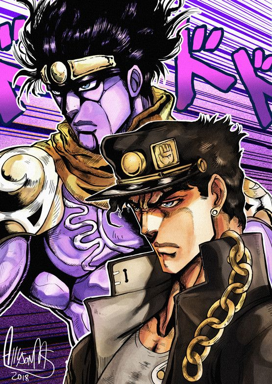
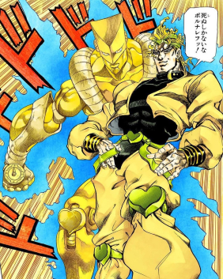
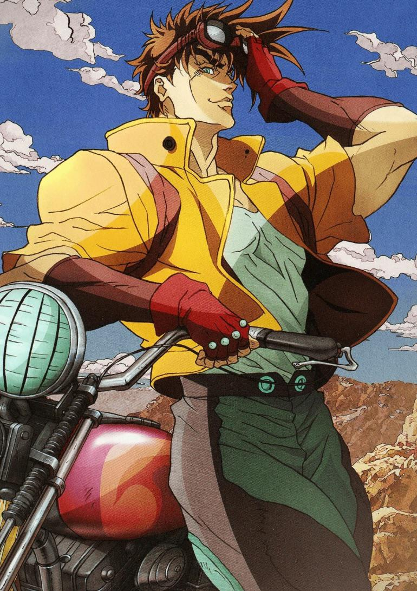

About JoJo's Bizarre Adventure
JoJo's Bizarre Adventure is a Japanese manga and anime series created by Hirohiko Araki. The story follows different members of the Joestar family across several generations. Each part introduces new characters, abilities and villains. Here are three characters who became especially famous among fans.
Jotaro Kujo

Jotaro Kujo is the main character of Stardust Crusaders. He is known for his calm personality and his Stand, Star Platinum. Jotaro later appears in several other parts of the series.
Important facts
- Main character of Part 3
- Uses the Stand Star Platinum
- Grandson of Joseph Joestar
- Fights Dio during the events of Part 3
Dio Brando

Dio Brando is one of the most important antagonists in JoJo's Bizarre Adventure. He begins his story in Phantom Blood and later returns as a major character in Stardust Crusaders. He is known for his Stand, The World.
Important facts
- Appears in Phantom Blood
- Becomes a vampire
- Returns as the main antagonist of Part 3
- Uses the Stand The World
- Fights Jotaro Kujo
Joseph Joestar

Joseph Joestar is the main character of Battle Tendency and an important character in Stardust Crusaders. He is famous for his cleverness, unpredictable fighting style and use of Hamon.
Contributions
- Master of Hamon
- Uses creative strategies in battles
- Fights the Pillar Men
- Helps Jotaro during Stardust Crusaders
Learn More
You can learn more about the series and its characters here:
JoJo's Bizarre Adventure on Wikipedia
Learn More